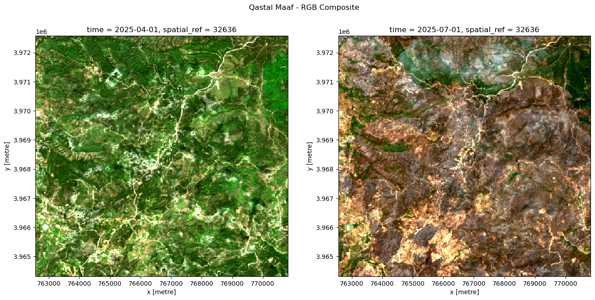
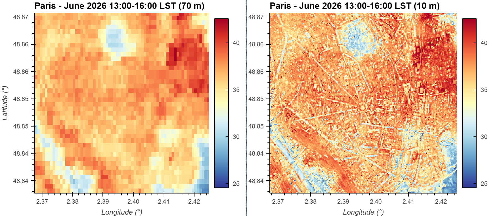
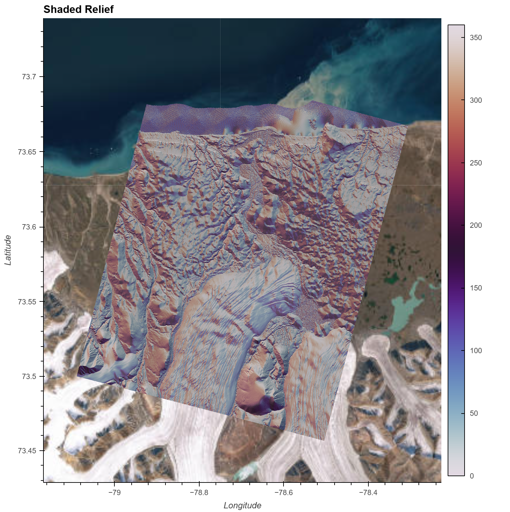
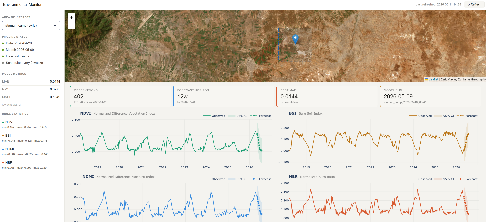

Latest Posts
-
Wildfire Impact Analysis Using Satellite Imagery
A burn severity analysis of a 2025 wildfire near Latakia, Syria, using Sentinel-2 imagery and the dNBR index to classify fire impact across the landscape. Burn extent estimates were validated against Copernicus Emergency Management Service reference data, achieving 89% accuracy and ~86% IoU scores.

-
Mapping Urban Heat at Higher Resolution: Machine Learning-Based Downscaling of ECOSTRESS LST from 70 m to 10 m in Python
A machine learning workflow for downscaling NASA's ECOSTRESS land surface temperature data from 70 m to 10 m resolution to better resolve neighborhood-scale urban heat patterns.

-
Production-Ready Terrain Analysis at Scale: A Cloud-Native Geospatial Workflow with STAC and Xarray
Modern geospatial workflows are shifting away from downloading massive datasets toward querying data directly from the cloud. A walkthrough of how to go from raw elevation data to terrain insights in a reproducible fashion without downloading a single file manually.

-
Environmental Monitoring: An End-to-End Machine Learning Pipeline with Earth Observation Data
An overview of an end-to-end geospatial machine learning pipeline, from data ingestion using STAC and Xarray to time series forecasting using XGBoost, and automated updates with GitHub Actions. The pipeline is designed to be efficient, automated, reproducible, and extensible.

{kind=link}
{kind=link}